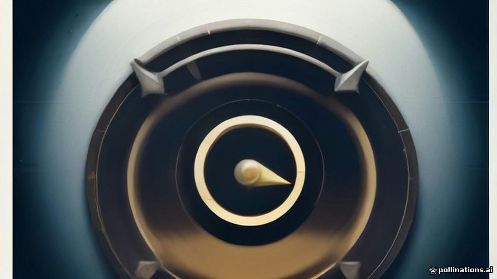

Pre-Market Brief — 12 November 2026
TL;DR
- Global Tone: Mixed cues with US markets closing higher, but Asian peers trading in negative territory.
- GIFT Nifty Bias: Points to a positive, gap-up opening for Indian markets.
- FII/DII Stance: Foreign Institutional Investors (FIIs) are aggressive net buyers, while Domestic Institutional Investors (DIIs) continue to be net sellers.
- Biggest News: FIIs have made a strong comeback as net buyers in November, providing significant market support.
- Day's Main Risk: Rising US 10-year Treasury yields and persistent DII selling.
How global markets traded — and what it means for India
Overnight, US markets closed firmly in the green, with technology stocks leading the charge. However, Asian markets this morning are largely trading lower, indicating a cautious sentiment across the region. This mixed global picture suggests that while positive momentum from the US could provide some tailwind, the weakness in Asian peers might temper enthusiasm.
| Index | Value | % Change |
|---|---|---|
| Dow Jones | 52486.49 | +0.49% |
| Nasdaq | 25466.19 | +1.60% |
| S&P 500 | 7619.38 | +1.31% |
| FTSE 100 | 10877.37 | +0.39% |
| Nikkei 225 | 60819.36 | -0.70% |
| Hang Seng | 24008.55 | -1.26% |
| Shanghai | 3655.83 | -0.67% |
Interpretation: The strong positive close in US markets, particularly the tech-heavy Nasdaq and S&P 500, offers a positive overnight tone. However, the subsequent dip in major Asian indices this morning suggests a degree of caution. For India, this translates to a potentially positive open, but sustained upward momentum might face resistance from regional weakness.
Currency, commodities and yields
The Indian Rupee (USD/INR) saw a slight depreciation against the US Dollar, while the Dollar Index remained largely stable. Crude oil prices (Brent and WTI) edged lower, which is generally a positive for India. Gold and Silver prices also declined. A notable movement was the rise in the US 10-year Treasury yield, which touched 5.00%.
- USD/INR: 94.04 (+0.12%)
- Dollar Index: 102.89 (-0.02%)
- Brent Crude: 92.28 (-0.52%)
- WTI Crude: 86.06 (-0.54%)
- Gold: 3947.80 (-1.32%)
- Silver: 51.12 (-1.48%)
- US 10Y Yield: 5.00 (+0.30%)
Interpretation: A slight rise in USD/INR offers a minor tailwind for export-oriented sectors like IT and pharma but could put pressure on importers. The decline in crude oil prices is a significant positive for India, potentially easing inflationary pressures and benefiting oil marketing companies, paint, and aviation sectors. The dip in precious metals might indicate a shift towards riskier assets globally. However, the rise in the US 10-year yield to 5.00% is a key concern, as higher global yields can make emerging markets less attractive, potentially impacting FII flows.
GIFT Nifty — what it's signalling
GIFT Nifty is currently trading at 25308.00, up by +0.33%.
Interpretation: This indicates a positive bias and points towards a gap-up opening for the Nifty 50 today, suggesting a firm start to the trading session.
FII/DII flows — who's driving the tape
Yesterday, Foreign Institutional Investors (FIIs) were significant net buyers, pumping in ₹12,563 crore into Indian equities. In contrast, Domestic Institutional Investors (DIIs) were net sellers, offloading equities worth ₹8,435 crore.
| Date | FII Net (₹ crore) | DII Net (₹ crore) |
|---|---|---|
| 2026-11-11 | +12,563 | -8,435 |
| 2026-11-09 | +7,212 | -7,173 |
| 2026-11-06 | +13,750 | -5,969 |
| 2026-11-05 | +14,975 | -10,445 |
| 2026-11-04 | +7,284 | -3,712 |
Interpretation: The consistent and strong buying by FIIs over the last five sessions, including a substantial inflow yesterday, is a major positive driver for the Indian market, indicating renewed foreign investor confidence. DIIs, on the other hand, have been consistently booking profits, which suggests some domestic caution or rebalancing. The FII buying trend is currently providing strong underlying support to the market.
Key levels to watch — Nifty, Bank Nifty & Sensex (technical)
Technical levels for Nifty 50, Bank Nifty, and Sensex are unavailable.
Interpretation: With technical levels for key indices unavailable, traders should exercise caution and rely on price action, global cues, and FII flow data for immediate direction. The absence of these levels means there are no clear predefined support or resistance zones from this data set.
Option-chain signals (OI) — where support & resistance sit
Option-chain data for Nifty, Bank Nifty, and Sensex is unavailable.
Interpretation: Without option chain data, it is difficult to pinpoint immediate support and resistance levels from derivatives. Market participants should focus on price action and volume to gauge strength and potential turning points, as well as the overall market sentiment driven by FII flows and global factors.
Corporate actions today
Several companies have ex-date today for various corporate actions, primarily interim dividends. On the ex-date, the stock price typically adjusts downwards by the amount of the dividend or distribution.
- HINDUNILVR: Interim Dividend - ₹19 Per Share (Price adjusts down by the dividend on ex-date).
- CITIUSINVT: Distribution - ₹2.9585 Per Unit Consists Of ₹1.7560 Per Unit As Interest/ Re 0.4885 Per Unit As Repayment Of Debt/ ₹0.6943 Per Unit As Dividend/ ₹0.0197 Per Unit As Other Income (Unit price adjusts for the distribution on ex-date).
- GAJA: Interim Dividend - Re 0.50 Per Share (Price adjusts down by the dividend on ex-date).
- GPTHEALTH: Interim Dividend - Re 1 Per Share (Price adjusts down by the dividend on ex-date).
- SAFARI: Interim Dividend - ₹2 Per Share (Price adjusts down by the dividend on ex-date).
- NHIT: Distribution - ₹2.529 Per Unit Consisting Of ₹2.518 Per Unit As Interest / Re 0.011 Per Unit As Other Income (Unit price adjusts for the distribution on ex-date).
- NLCINDIA: Interim Dividend - ₹1.50 Per Share (Price adjusts down by the dividend on ex-date).
- GPPL: Interim Dividend - ₹3 Per Share (Price adjusts down by the dividend on ex-date).
- GODFRYPHLP: Interim Dividend - ₹10 Per Share (Price adjusts down by the dividend on ex-date).
- IMFA: Interim Dividend - ₹5 Per Share (Price adjusts down by the ex-date).
- INSECTICID: Interim Dividend - ₹5 Per Share (Price adjusts down by the dividend on ex-date).
- BAYERCROP: Interim Dividend - ₹90 Per Share (Price adjusts down by the dividend on ex-date).
- IRB: Interim Dividend - Re 0.05 Per Share (Price adjusts down by the dividend on ex-date).
- ONGC: Interim Dividend - ₹8 Per Share (Price adjusts down by the dividend on ex-date).
Stock & sector news that matters
- FIIs are back! Jefferies lists 11 stocks that can be the biggest beneficiaries
- India's Next Billion-Dollar IPO? Coal India subsidiary Mahanadi Coalfields in line after Jio, NSE - key things to know
- Indian bonds drift as US debt rout saps oil relief before CPI
- Mahindra & Mahindra among 5 stocks showing White Marubozu Pattern
- Bloom Energy shares jump 13%: Can the AI power stock sustain its rally?
Foreign Institutional Investors (FIIs) have unexpectedly turned net buyers of Indian equities in November, marking a significant shift in market dynamics. Jefferies has identified 11 stocks that are poised to be the biggest beneficiaries of this renewed interest. Why it matters: This news highlights a crucial positive shift in foreign investor sentiment towards Indian equities. It suggests that specific stocks and sectors favoured by FIIs could see increased buying interest and potentially outperform, driving broader market momentum.
Mahanadi Coalfields, a subsidiary of Coal India, is preparing for a potential IPO aiming to raise up to $1 billion, having received SEBI observations on November 4. The offer will involve a 10% stake sale by Coal India. Why it matters: This is a significant upcoming public offering that could attract substantial investor attention, potentially impacting liquidity in the broader market. It also brings the focus back to the public sector and the coal/mining sector, which could see renewed interest.
Indian government bonds remained stable on Thursday morning, reflecting a pause after recent volatility. Market sentiment is influenced by declining oil prices and climbing US Treasury yields, with upcoming CPI data in focus. Why it matters: This indicates a cautious mood in the Indian debt market. While falling crude is positive, the upward movement in US yields is creating headwinds. It also flags the upcoming CPI data as a critical event that could dictate the near-term trajectory of bond yields and, by extension, equity market sentiment.
Five stocks in the Nifty500, including Mahindra & Mahindra, that saw a change of more than 5% appeared on the ‘White Marubozu’ bullish scanner, according to StockEdge’s technical scan data. Why it matters: A 'White Marubozu' is a strong bullish candlestick pattern, indicating that buyers were in control throughout the session. This suggests strong positive momentum for Mahindra & Mahindra and the other identified stocks, potentially signalling continued upward movement for these specific counters.
Bloom Energy shares surged 13% after strong CoreWeave results eased concerns over AI infrastructure spending, though the stock remains well below its record high. Why it matters: While a US-listed company, this news reflects broader investor sentiment around Artificial Intelligence (AI) infrastructure and technology. Positive developments in this space globally could indirectly influence Indian IT services and technology-related stocks, given their exposure to global tech trends.
Events & data to watch — and how markets usually react
- US Consumer Price Index (CPI) Data: The bond market news highlighted that CPI data is anticipated. Markets typically react with increased volatility around key inflation data releases, as these figures heavily influence central bank policy decisions (like interest rates) and can shift market expectations for economic growth.
- FII Flow Trend: The continued direction and magnitude of FII inflows will be crucial. Sustained strong FII buying typically provides significant support and drives market rallies, while a reversal can lead to corrections.
- Global Crude Oil Prices: Movements in Brent and WTI crude prices will remain important. A sustained decline is generally positive for India's economy and corporate margins, while a sharp rise can fuel inflation concerns and impact sectors like aviation, paints, and logistics.
- US 10-Year Treasury Yields: The recent rise in US 10Y yields to 5.00% is a key global factor. Higher US yields can make dollar-denominated assets more attractive, potentially leading to capital outflows from emerging markets like India, especially if the differential narrows too much.
What to watch in today's session
- GIFT Nifty's Signal: Monitor how the Indian benchmarks open, especially given the positive gap-up indicated by GIFT Nifty.
- FII vs. DII Flows: Keep a close eye on the FII buying momentum and whether DII selling continues at the same pace. FII activity will be key to sustaining any rally.
- Crude Oil & US Yields: Track global crude oil prices and the US 10-year yield. Any significant moves here could influence sentiment and capital flows.
- Corporate Actions: Stocks going ex-dividend today, particularly large names like HINDUNILVR, ONGC, and BAYERCROP, might see some price adjustments and trading activity.
- Sectoral Focus: Watch for potential interest in sectors related to the news, such as auto (Mahindra & Mahindra) due to technical patterns, and any early buzz around the Mahanadi Coalfields IPO.
- Price Action: In the absence of specific technical and option chain levels, rely more on price action and volume to identify intraday support and resistance.
Bottom line
Indian markets are poised for a positive open, primarily driven by the strong buying momentum from Foreign Institutional Investors and a positive signal from GIFT Nifty. While the overnight US cues were supportive, the cautious tone from Asian markets and the rising US 10-year yield warrant attention. The sustained FII inflows are providing a strong floor, but traders should be mindful of potential profit-booking by DIIs and global yield movements.
Sources
- economictimes.indiatimes.com
- livemint.com